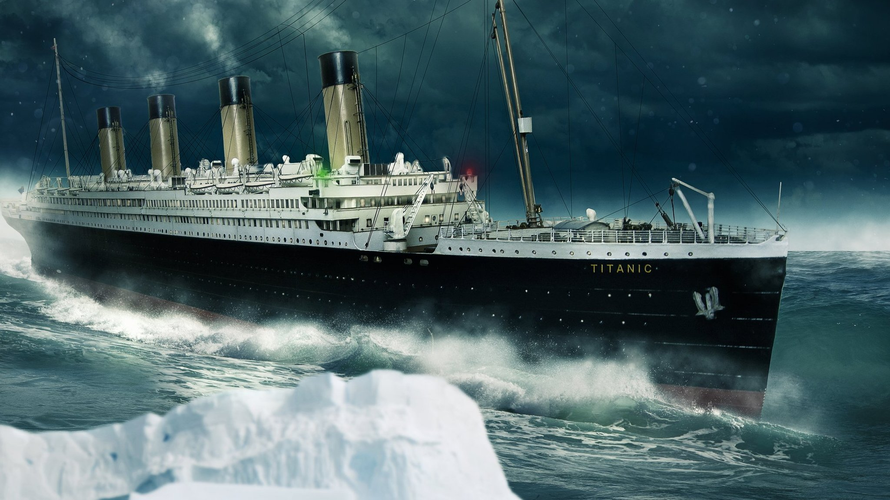

La teoría del Titanic
El Titanic, construido en 1912 por la compañía White Star Line, es famoso por su trágico hundimiento en el Atlántico Norte durante su viaje inaugural. Sin embargo, existe una teoría conspirativa que afirma que el desastre podría no haber sido un accidente. Según esta idea, la compañía White Star Line habría intercambiado el Titanic con su barco gemelo, el Olympic, que había sufrido daños previos en un accidente. La intención sería hundir el Olympic intencionalmente para cobrar un seguro millonario, mientras que el Titanic real continuaba operando bajo otra identidad. Los defensores de esta teoría señalan las similitudes en la construcción de ambos barcos, documentos de reparación y cambios de nombre sospechosos como evidencia de este plan secreto.

Además, algunos teóricos destacan anomalías en los planos de construcción y en los testimonios de los sobrevivientes. Alegan que ciertas secciones del barco parecían modificadas para confundir a los inspectores, y que la tripulación recibió instrucciones inusuales respecto a los protocolos de emergencia. Se dice también que el Titanic navegaba a una velocidad excesiva, ignorando advertencias de icebergs, lo que podría haber sido parte de un plan deliberado para provocar el accidente. Otros afirman que la selección de pasajeros influyentes y millonarios no fue casual, sino que obedecía a intereses económicos de ciertos inversionistas y aseguradoras.
Algunos conspiracionistas incluso afirman que ciertos objetos a bordo tenían un valor simbólico o maldito, y que la tragedia habría sido planeada para eliminar rivales financieros o personas incómodas para grupos de poder. Entre los rumores más extraños se incluyen maldiciones, predicciones de escritores y rumores de que un aviso secreto sobre la velocidad y la ruta del barco fue ignorado intencionalmente.
Existe otra teoría que sugiere que la catástrofe se aprovechó para experimentar con tecnología de salvamento, evaluando botes salvavidas y protocolos de emergencia en condiciones extremas. Aunque parece poco probable, algunos investigadores argumentan que ciertos patrones de comportamiento de la tripulación y los pasajeros durante el desastre podrían haber sido observados y documentados con fines experimentales.
Por otro lado, hay quienes sostienen que el hundimiento del Titanic fue utilizado para ocultar secretos de construcción naval, avances en ingeniería o incluso experimentos de comunicaciones y radio de largo alcance. Se dice que algunos mensajes de radio fueron manipulados o retrasados, contribuyendo al caos y a la magnitud de la tragedia.
A pesar de la evidencia histórica que confirma que el Titanic se hundió tras colisionar accidentalmente con un iceberg, la fascinación por el misterio y las posibles conspiraciones continúa. La teoría del Titanic combina secretos empresariales, errores humanos, posibles intenciones ocultas y rumores extravagantes, convirtiéndola en una de las historias más intrigantes y debatidas de la historia marítima. Su narrativa mantiene vivo el interés de historiadores, curiosos y amantes de las conspiraciones, mostrando cómo un evento trágico puede generar múltiples interpretaciones y teorías alternas que persisten más de un siglo después del desastre.